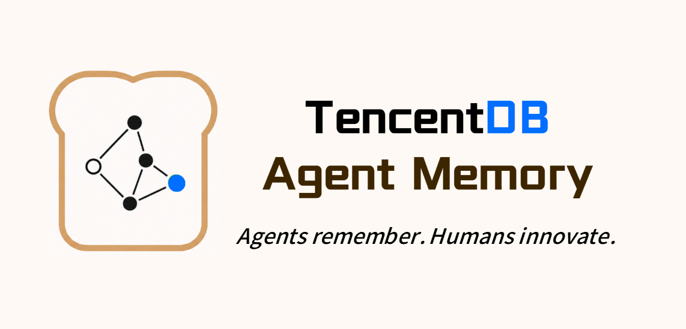
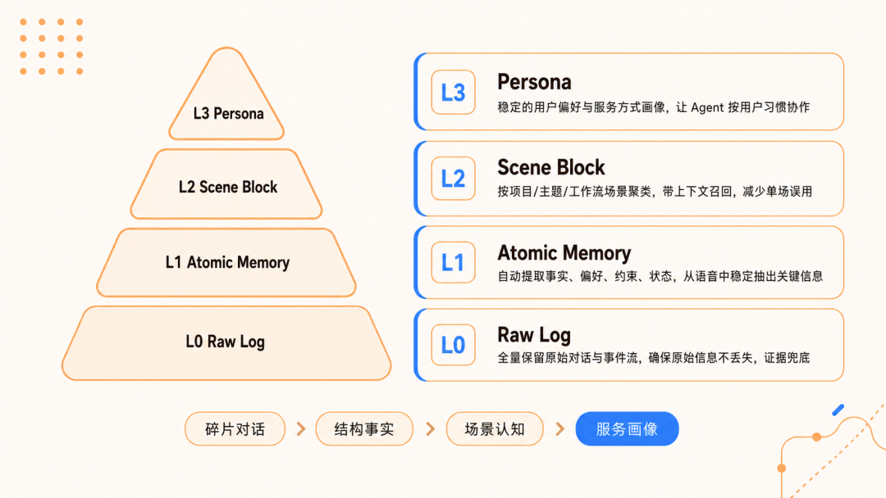
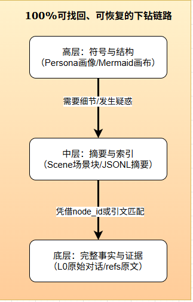

L0
Conversation / Raw Log
保留原始对话和事件流，承担证据备份；压缩不是删除，而是可恢复抽象。

README 给出的效果数据来自 OpenClaw 插件接入后的长程 Session 评测：短期记忆压缩降低 token 消耗，同时在 WideSearch、SWE-bench、AA-LCR 上提升成功率；长期记忆在 PersonaMem 上从 48% 提升到 76%。这些数字应理解为项目自述 benchmark，不等同于第三方独立评测。
卡片保留 README 的 benchmark 口径：它证明项目关注“连续长任务”的上下文压力，但是否迁移到你的 Agent / 模型 / 工作负载，仍需用本地任务集复测。
仓库明确反对“扁平向量堆砌”：对话不是直接切片丢进库里，而是逐层提炼、逐层召回。日常偏好走 L3 Persona / L2 Scenario；具体事实回查 L1 Atom / L0 Conversation；当前长任务继续执行则看 Active Mermaid 任务画布。

保留原始对话和事件流，承担证据备份；压缩不是删除，而是可恢复抽象。
抽取事实、偏好、约束、状态；供具体事实检索和冲突判断使用。
按项目、主题、工作场景聚类，降低单轮召回误用。
稳定用户偏好和服务风格画像，让 Agent 按用户习惯协作。
长程任务中最耗 token 的通常是搜索结果、代码、错误日志和工具输出。TencentDB Agent Memory 的短期记忆链路会把完整工具日志卸载到外部文件系统，只把高密度 Mermaid 任务地图留在上下文里；当 Agent 需要核对细节时，再沿着 node_id / result_ref 找回原文。
README 中 WideSearch token 消耗从 221.31M 降至 85.64M，核心机制是把过程日志移出上下文。
压缩最大风险是丢事实；项目用 result_ref / node_id 链接高层符号与底层原文。
相比自然语言长摘要或扁平 JSON，拓扑图更适合表达任务流转、阻塞点和恢复入口。
仓库目录显示它包含 TypeScript 主体、OpenClaw 插件描述、Hermes Python 插件、Docker 配置、CLI 脚本与迁移工具。核心包名为 @tencentdb-agent-memory/memory-tencentdb，版本 0.3.6，要求 Node.js ≥ 22.16.0。
通过 openclaw.plugin.json 与 postinstall patch 接入工具调用后的消息流，可自动捕获、提取、召回。
hermes-plugin/memory/memory_tencentdb/ 提供 client、supervisor、plugin.yaml 和恢复测试。
默认本地 SQLite + sqlite-vec；同时提供迁移到腾讯云向量数据库 TCVDB 的脚本。
@tencentdb-agent-memory/memory-tencentdb · version 0.3.6migrate-sqlite-to-tcvdb · export-tencent-vdb · read-local-memorysrc/core、src/adapters、src/storage、scripts、hermes-plugin、docker/opensourceREADME 的 Quick Start 对 OpenClaw 和 Hermes 分开说明。OpenClaw 侧强调零配置启用与可选短期压缩；Hermes 侧提供 Docker 全新部署与挂到已有 Hermes 的路径。卡片不展开任何真实密钥，只保留结构化命令和检查点。
openclaw plugins install @tencentdb-agent-memory/memory-tencentdb # optional: enable short-term offload / configure recall / persona / embedding # verify: memory capture → L1 extraction → recall injection
docker build -f docker/opensource/Dockerfile.hermes -t hermes-memory . docker run -d --name hermes-memory --restart unless-stopped \ -p 8420:8420 \ -e MODEL_API_KEY="<YOUR_MODEL_KEY>" \ -e MODEL_BASE_URL="<OPENAI_COMPATIBLE_ENDPOINT>" \ -e MODEL_NAME="<MODEL_NAME>" \ -v hermes_data:/opt/data hermes-memory curl http://127.0.0.1:8420/health
控制是否捕获、排除哪些 Agent、L0/L1 文件保留天数、清理时间。
配置每个 session 最大记忆数、去重、提取模型，避免重复事实污染。
通过 everyNConversations、idle timeout、interval 控制提炼节奏。
支持 keyword / embedding / hybrid，配置 topK、阈值和注入字符预算。
控制每多少条新记忆触发 Persona，保留多少 scene 与备份。
可接 OpenAI 兼容 API；若 provider 为 none 或配置缺失，会降级为非向量模式。
embedding、LLM、offload 后端涉及外部服务时，必须显式处理凭证、baseUrl、model、dimensions 和降级路径；不要把“插件能启动”误判为“向量召回已生效”。
许多记忆系统的调试体验停留在“向量分数不对但不知道为什么”。TencentDB Agent Memory 把关键中间产物落到可读文件：L2 Scenario 是 Markdown，L3 Persona 是 persona.md，短期任务画布是 Mermaid，原文与摘要之间有 result_ref / node_id 关联。

当用户偏好、项目背景、工具习惯和任务中间状态需要跨会话复用时，分层记忆的收益更明显。
如果任务不需要长期画像、证据下钻或宿主框架接入，完整记忆流水线可能显得过重。
L0 → L3 已在 README Roadmap 标为完成。
Context Offload + Mermaid 画布已完成，并与 benchmark 绑定。
插件与 Gateway 适配已完成，仓库中有对应目录和测试。
记忆导入导出和热迁移仍在规划中，关系到多端使用。
从执行轨迹和错误日志沉淀 SOP / Skill，是它从“记忆”走向“能力”的关键。
如果成型，会显著降低白盒记忆系统的运维成本。
README、README_CN、源码目录、图片资产与 package 信息来源。
包名、版本、Node 要求、CLI 入口与插件安装路径。
README 中标注 Hermes Gateway 适配的宿主参考。
数据核查时间：2026-06-15 22:17 CST · GitHub API / Raw README / package.json / 仓库目录树 · 信息卡风格：infocard-redswiss-style